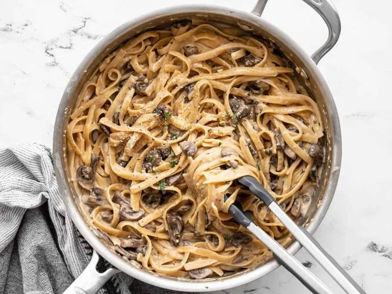

Mushroom Pasta
Home

Description
This mushroom pasta recipe was inspired by Budget Bytes' "One Pot Creamy Mushroom Pasta" recipe. I love to make
this recipe when I am craving something creamy and something carby. While I may usually gravitate towards mac
and cheese or ramen, what sets this recipe apart is the feeling that I would pay for it at an italian restaurant,
so when I am trying to not embarrass myself in front of guests, granted that they can stand mushrooms, I often
make this. Be prepared to be in a delicious food coma after you eat the whole thing!
Ingredients
- Olive Oil
- Garlic
- Butter
- 16 oz Baby Bella sliced/quartered Mushrooms
- 5 cups mushroom broth (or veggie broth)
- 16 oz fettucine
- 1/2 cup whole milk or heavy whipping cream
- Salt
- Pepper
- 1/2 c parmesan and more for serving
Steps
- Heat large pan/skillet over medium-high heat with olive oil
- When hot, add garlic and stir for 30 sec
- Add in the mushrooms, saute until soft, 4-5 minutes
- Add the broth, when boiling add in the fettucine
- Cook pasta as per instructions on the box
- Once pasta is cooked, add in the milk/cream and cook on low until the consistency is thick
- Salt and pepper to taste
- Add in the parmesan, stir until combined
- Serve hot, sprinkle parmesan on top as desired